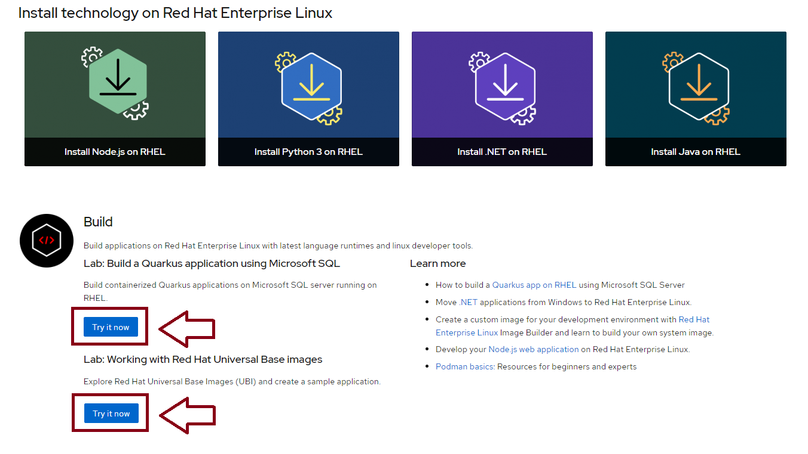

LABs REDHAT RHET sur le cloud
Bonne nouvelle pour les passionnés de Linux ! Il est maintenant possible d'avoir accès à une VM Red Hat gratuitement sur le cloud pour des tuto guidés. Voici comment faire :
Étape 1 : Visitez le site de Red Hat
Étape 3 : Accédez à la VM
Étape 4 : Lancez vos termina

Et voilà ! Vous avez maintenant accès à une VM Red Hat. Profitez-en et explorez toutes ses fonctionnalités !